さくら咲く地蔵
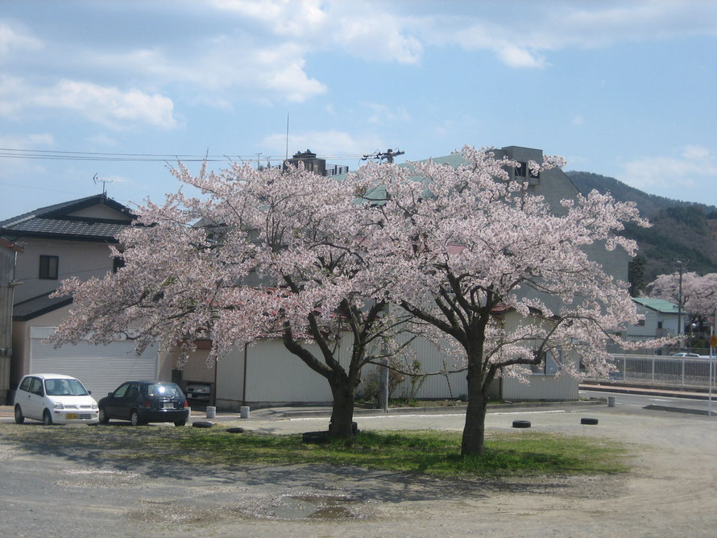
旧第二保育所の園庭には２本の桜の木がありました。
旧第一小学校分校、旧第二保育所、授産施設うみねこ、地区のペタンク場と、役割が変化していく場所に立っていました。
そこで７０年以上、女川の子供達をはじめ、町民を見守っていてくれた桜でした。
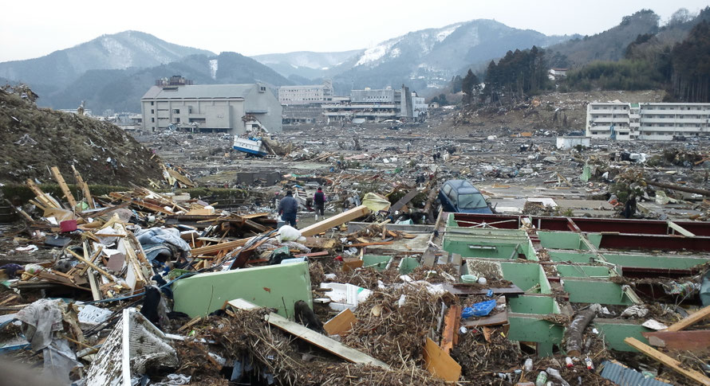
２０１１年３月１１日、女川町を襲った大津波は街を茶色の瓦礫の山に変えました。
今まで住んでいた家が流され、多くの人が犠牲となりました。
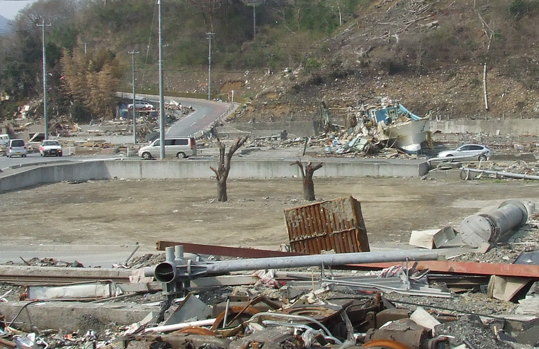
町内にたくさんあった、サクラの木々も津波によって根元から引き抜かれ、海中へと姿を消しました。
町の中は、ガレキや土砂で埋め尽くされ、色を失い茶色の街となりました。
旧第二保育所園庭の桜だけは、上部を失いながらも根元の幹だけは残っていました。
ですが、桜の木はもう死んでしまったと思われていました。
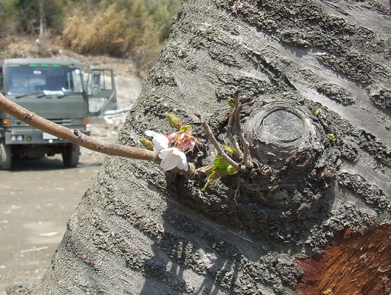
４月も終わりかける頃、避難場所であった総合体育館から、駅の方へ歩いていたときでした。
茶色の風景の中に、ちらっと薄桃色のものが見えたのです。
あの、サクラの幹に花が咲いていたのです、三輪。
そして新しい枝も、緑の葉も。
生きていた！花を咲かせている！！
やがて、この桜の木を守ろうと、活動が始まりました。
茶色一色の景色の中に咲いた、薄桃色の花は、みんなの心にガンバレ！というエールを送ってくれていたのです。
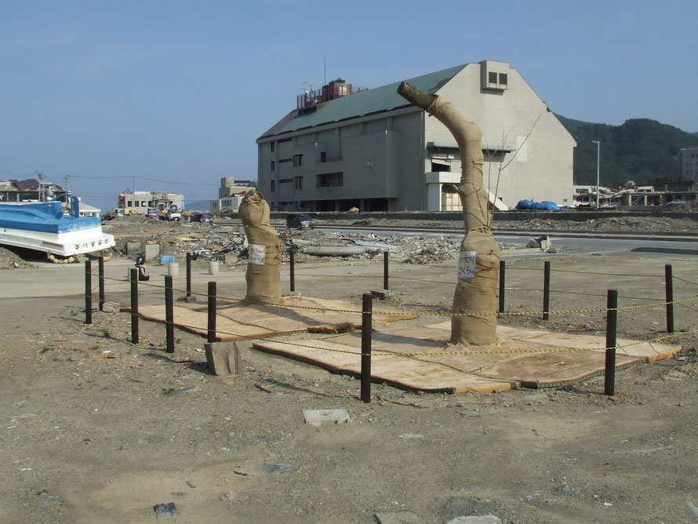
樹木医が駆けつけ、大きく傷ついた幹の手当てをしてくれました。
町行政も周囲を柵で囲ってくれました。
中学校の生徒や先生達が水を撒いてくれたり、高校生が周囲に花いっぱいのプランターを置いてくれたり・・
たくさんの人々が、樹勢の回復を祈りました。
とりわけ暑かったこの年の太陽に耐え、サクラは枯れても枯れても、次々と葉芽を出し、枝を伸ばし生きようと頑張っていました。
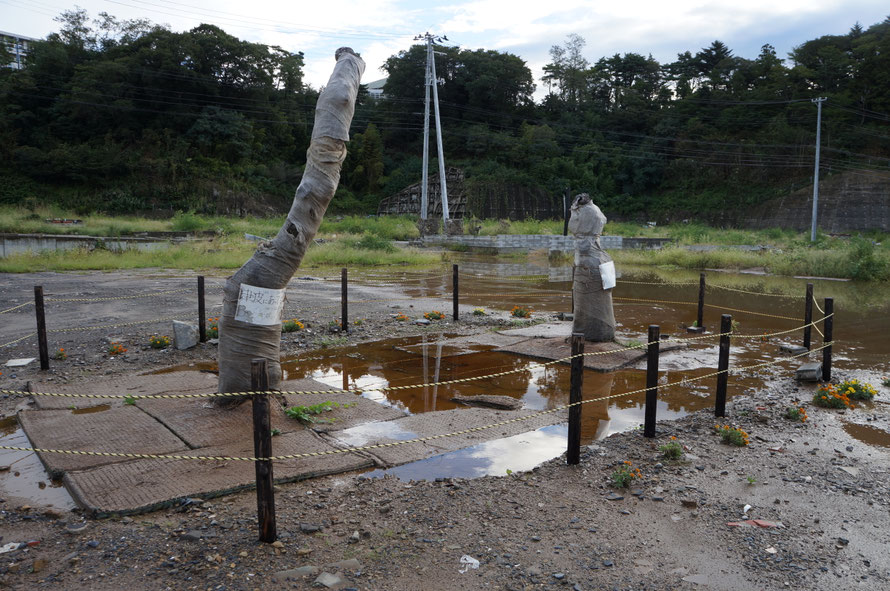
しかし、９月になって、とうとう１本の枝も、一枚の葉も残すことはできませんでした。
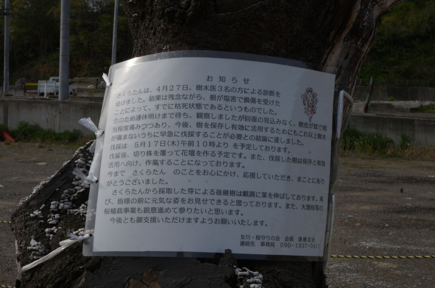
２０１２年４月２７日。樹木医の診断を受け、枯死が宣告されました。
危険を避けるため、伐倒することが決定されました。
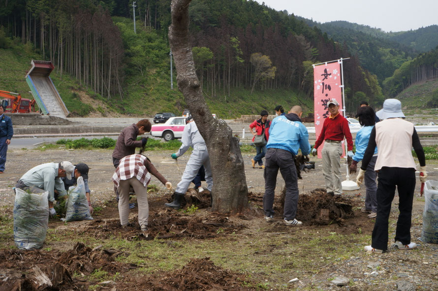
２０１２年５月１７日。
サクラを見守ってきた町民の手によって、周囲の清掃が行われました。
頑張ってくれたサクラに御神酒をかけ、苦労をねぎらい伐倒することになりました。
伐採後、跡地はきれいに整備され、花壇となりました。
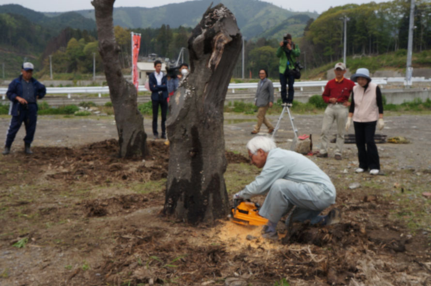
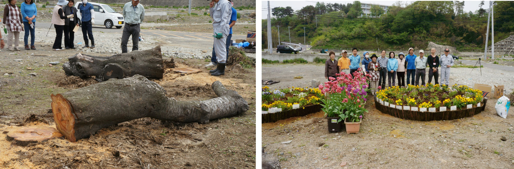
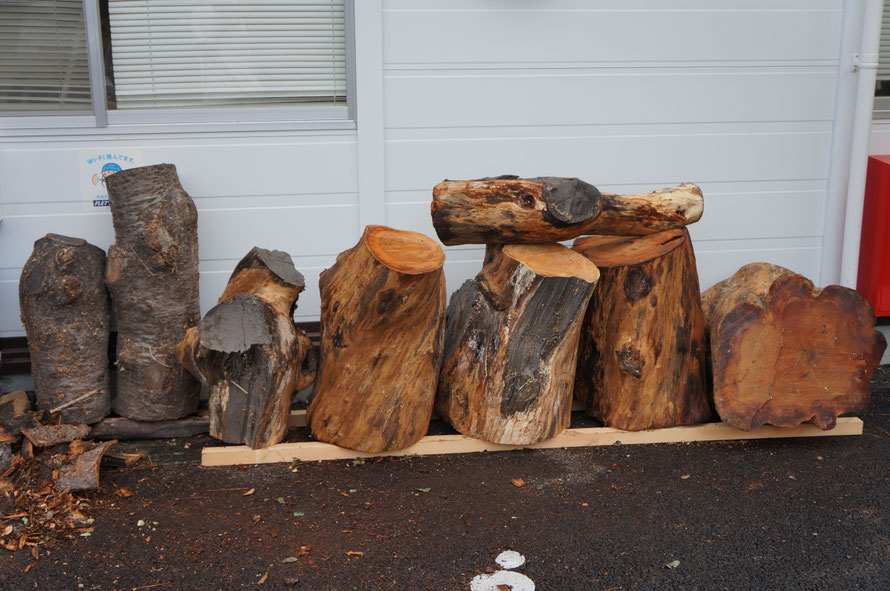
伐採された幹は一旦、陸上競技場の倉庫に保管されていました。
その後は、陸上競技場解体のために、きぼうの鐘仮設商店街の一画に移されました。
このまま処分してしまうのは忍びなく、どうすればいいか議論されていました。
細かく切って、希望者に配る、机に加工する、お盆等の食器に加工する、モニュメントを作る・・・いろいろな意見が出てまとまりませんでした。
２０１２年、秋も深まったころ、京都から僧侶の皆さんがきぼうの鐘商店街にお出でになり、たまたま、このサクラの幹をご覧になりました。
由来をお答えしたところ、仏像にするのはいかがか、との提案を頂きました。
桜の木は固く、彫るのは難しいが、仏像には適している、とのお話。
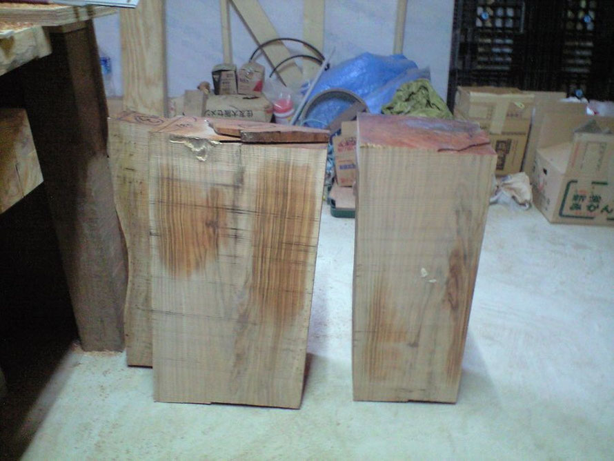
小学校、保育所、授産施設と役割をかえながら、ずっと子供達のそばにあり、子供達を見守ってきていた桜ですから、お地蔵様を彫りだしていただこうと話が決まりました。
お地蔵様は、京都在住の、仏師、木地師である小田健太郎様にお願いいたしました。
地蔵堂は神奈川県在住の丸山博正様、伊藤健一様が取り組んでいただけることになりました。
桜の幹は京都に運ばれ、乾燥させながら少しずつ彫り進んでいかれました。
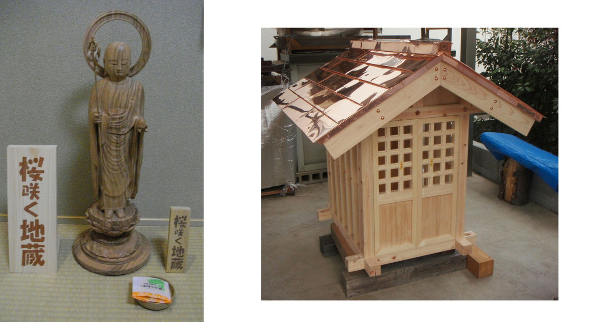
２０１４年、地蔵尊像と地蔵堂が完成しました。
地蔵尊は 桜さく地蔵と命名されました。
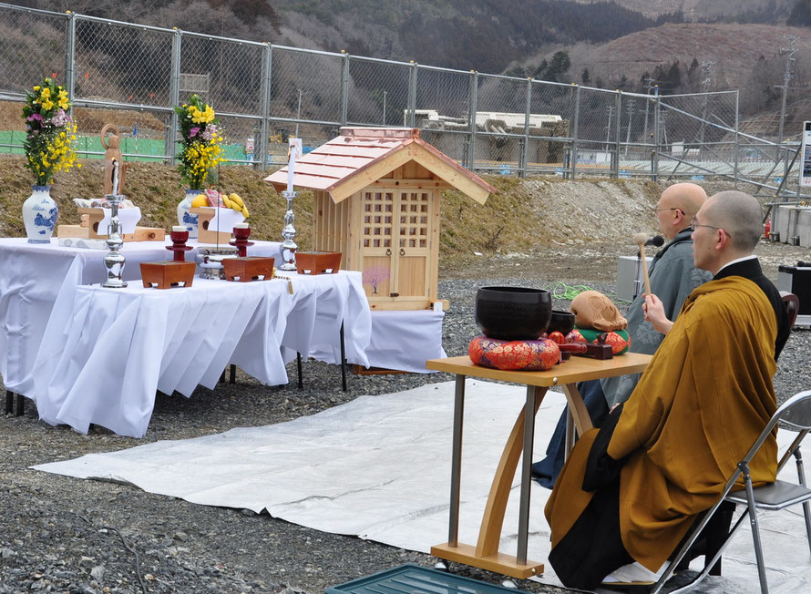
２０１４年３月１４日 海岸前広場にて開眼法要が執り行われました。
法要後、設置場所が未だ工事中のため地蔵尊像は一旦、坂橋山照源寺に仮住まいをしていただくことになりました。
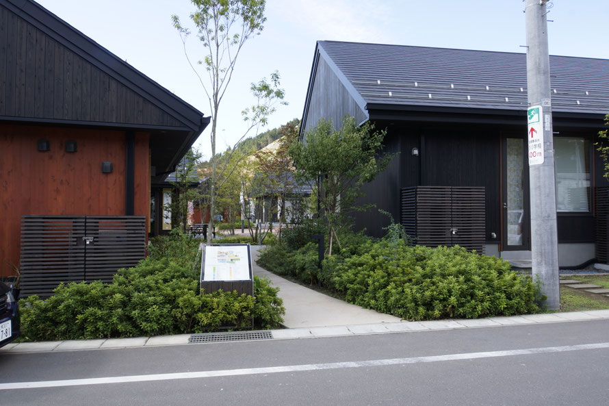
２０１６年秋、商店街シーパルピア女川が完成しその路地の一角に設置場所が決まりました。
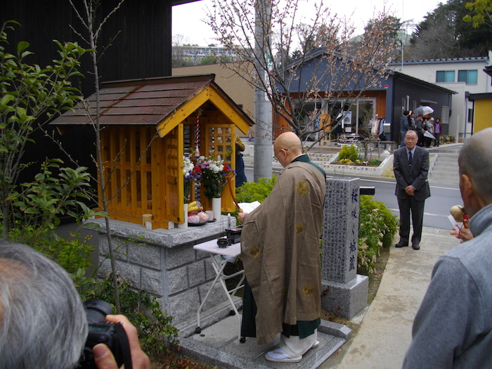
２０１７年４月１５日。
地蔵堂の工事が終わり、お地蔵様の安置法要が行われました。
津波でも生き残り、花を咲かせわたし達を勇気づけてくれた桜の幹から彫り出されたお地蔵様が、この地でこれからもずっとわたし達を見守って下さるように。
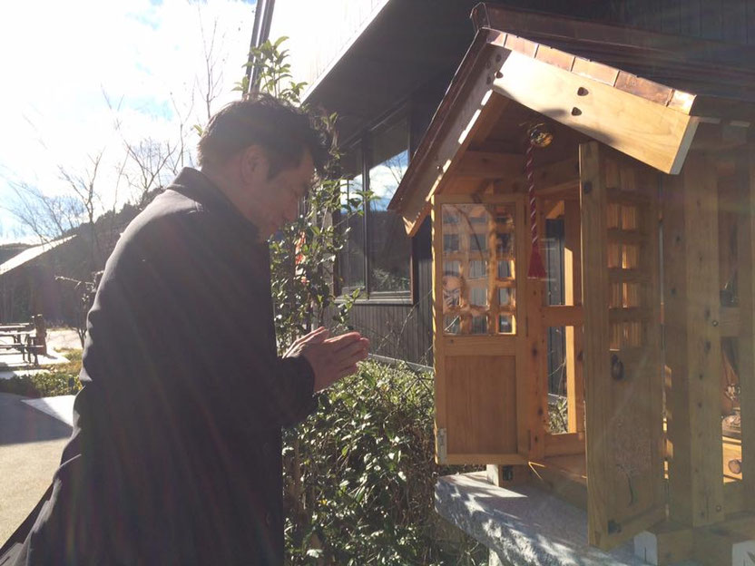